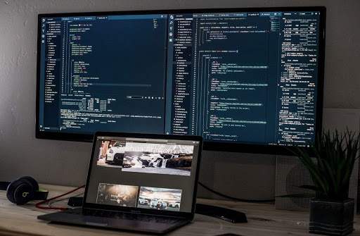
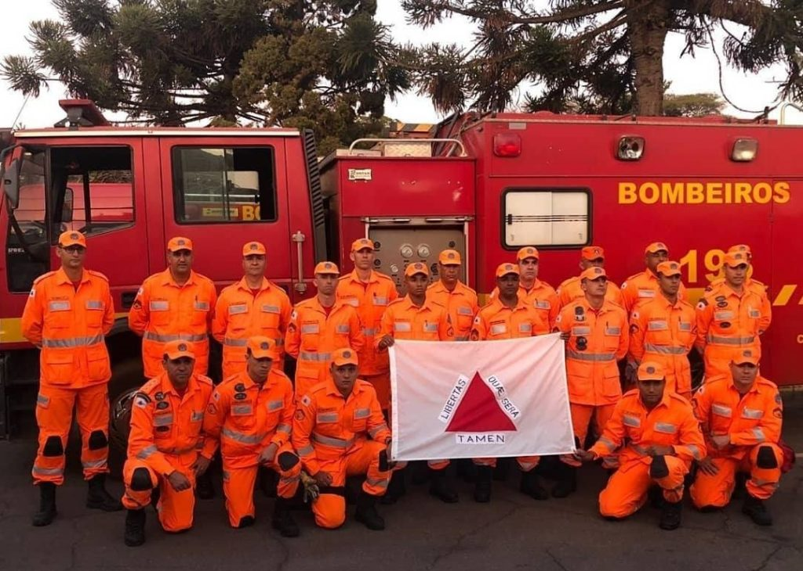
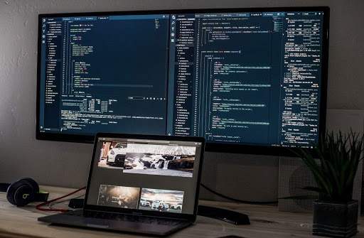
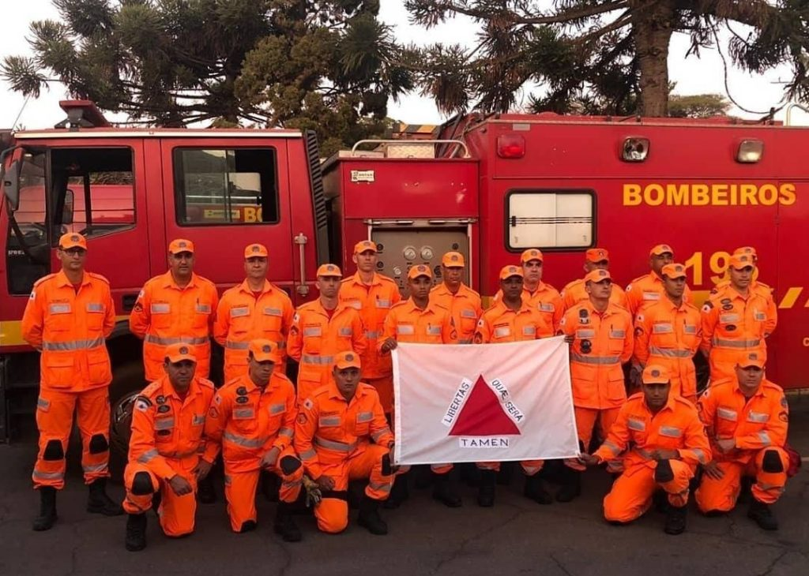

Meu nome é Gabriel Vieira Nunes, tenho 16 anos, nasci
em Belo Horizonte - MG
e moro ate hoje aqui, no
momento estou no 3° ano do ensino medio e fazendo
curso técnico no senai,
Gosto bastante de andar de bicicleta,
jogar video game.
 


